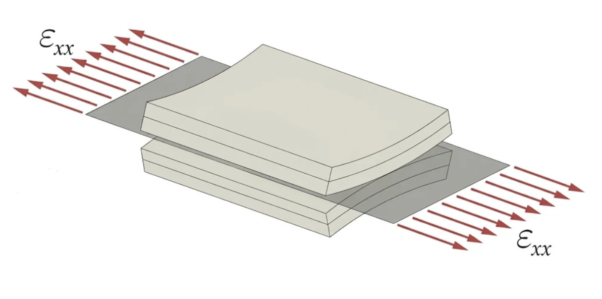
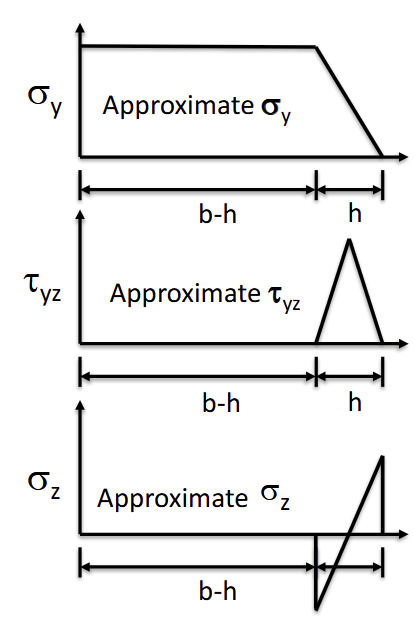
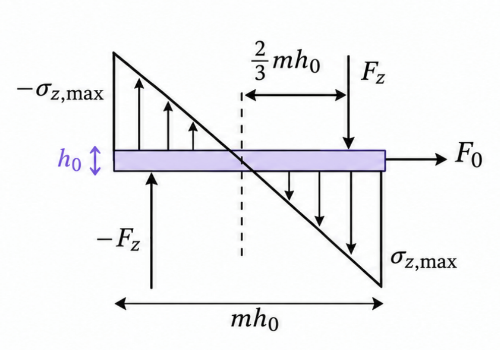

Free-Edge Interlaminar Stress Analysis
Composite Mechanics | Three-Dimensional Equilibrium | Approximate Stress Modeling
Interlaminar stresses near the free edges of composite laminates arise from three-dimensional equilibrium and are not captured by conventional plane-stress Classical Laminate Theory. This project investigated whether structured, domain-specific AI guidance could improve the reproduction and application of established free-edge stress formulations based on the work of R. Byron Pipes and N. J. Pagano [2]. Two complementary AI skills were developed and evaluated: one emphasizing physical mechanics and another emphasizing analytical equations and numerical procedures.
- Free-body diagrams
- Force and moment balance
- Classical Laminate Theory
- AI solution evaluation
- STUDY
- AAE590AI Individual Project
- ANALYSIS SCOPE
- Symmetric eight-ply laminates under uniform axial loading
- REFERENCE CASES
- Four laminate configurations
- MODEL STATUS
- Approximate analytical model; not experimental or 3D FEA validated
Overview
Plane-stress Classical Laminate Theory (CLT) provides in-plane laminate response but does not resolve the local interlaminar stress field at a free edge. The established analytical formulations studied here are based on the work of R. Byron Pipes and N. J. Pagano [2]; their governing mechanics are distinct from this project’s AI evaluation.
My contributions were to study and reconstruct the analytical reasoning in the reference material, identify the physical force and moment balances governing interlaminar shear and normal stresses, and develop two complementary AI guidance skills. V1 emphasized physical reasoning, free-body diagrams, and stress mechanisms; V2 emphasized mathematical derivations, equations, and numerical procedures. I tested V1, V2, and their combined use against reference calculations for four symmetric eight-ply laminates.
What plane-stress CLT leaves unresolved
At a free edge, adjacent plies with different orientations can have incompatible in-plane deformation. The resulting three-dimensional redistribution includes interlaminar shear and peeling stresses, which are absent from the plane-stress CLT solution [2]. A practical estimate therefore needs additional assumptions about how those stresses vary across the laminate thickness and boundary layer.

Equilibrium and assumed boundary-layer distributions
The analysis considers symmetric laminates, so the bending-extension coupling matrix is zero, under uniform axial loading. It uses a wide-plate approximation, a boundary-layer width equal to the total laminate thickness, and assumed through-thickness stress distributions to close the force and moment balances.
I reconstructed the established force and moment balances using free-body reasoning to relate changes in in-plane ply stresses to interlaminar tractions [2]. The shear and peeling distributions are simplified approximations: their shapes and amplitudes follow the selected assumptions and equilibrium constraints, rather than a solution of the full three-dimensional elasticity problem.


Approximate stress relationships
The approximate shear relationship is expressed in terms of ply-level stresses from CLT [2]:
The established normal-stress formulation gives the maximum interlaminar normal stress in terms of the bending moments generated by the ply forces [2]:
Here, m is the number of plies, h0 is the ply thickness, and Fj is the in-plane force per unit width in ply j. The moment sum is evaluated for the k-ply section. These are established approximate model equations, not equations newly developed in this project, and they should not be interpreted as exact local free-edge stresses.
Comparing structured guidance
I evaluated a baseline response, mechanics-focused guidance (V1), equation-focused guidance (V2), and combined V1+V2 guidance against the report’s reference calculations. The two skills were developed for this project: V1 emphasized physical reasoning, free-body diagrams, and stress mechanisms; V2 emphasized mathematical derivations, equations, and numerical procedures.
V1 partially captured the mechanism but missed the factor of two in the shear relation, used an unsupported normal-stress shape and incorrect moment arms, and produced mostly incorrect numerical results. V2 gave the correct equation forms but had mixed numerical performance; its peeling-stress result was approximately doubled for cases C and D. The combined condition performed best in the report’s implementation comparison.
Where derivations and implementations diverged
Comparing generated results with the reference calculations exposed incorrect assumptions, missing numerical factors, stress-amplitude errors, and implementation mistakes. The contrast between equation forms and numerical outputs shows why checking equilibrium alone is not enough; geometry, sign convention, and implementation details must remain consistent with the established mechanics.
Limitations and lessons learned
The model relies on assumed stress shapes, a boundary-layer width equal to the laminate thickness, and a wide-plate approximation. It does not resolve the exact local or potentially singular free-edge stress field. Its results are analytical approximations based on the report’s CLT reference stresses, not independently validated by experiments or three-dimensional finite-element analysis.
This small, problem-specific evaluation is not an independent validation of the stress model. Further validation would require an appropriate independent three-dimensional analysis or experimental study.
Qualitative Comparison of AI Skill Configurations
| Criterion | V1 only | V2 only | V1 + V2 |
|---|---|---|---|
| 3D equilibrium | Correct | Correct | Correct |
| Shear stress mechanism | Partially correct | Correct | Correct |
| Shear stress amplitude | Incorrect | Correct | Correct |
| Normal stress mechanism | Partially correct | Correct | Correct |
| Normal stress amplitude | Incorrect | Correct equation | Correct equation |
| Numerical implementation | Mostly incorrect | Mixed | Best |
These ratings are my qualitative evaluation against the reference solutions, not independently validated performance metrics. “Best” is a relative assessment among the three tested configurations, not a claim of universally correct numerical predictions. “Correct equation” does not mean the numerical implementation was fully correct.
Both guidance approaches captured the governing equilibrium equations, but the mechanics-focused skill alone struggled with stress amplitudes and numerical implementation. The equation-focused skill improved analytical consistency, while combining both approaches produced the strongest overall numerical performance among the tested configurations. These results suggest that explicit mathematical formulations and physical reasoning provide complementary guidance for AI-assisted engineering analysis.
Conclusion
This project studied and implemented established analytical free-edge stress formulations based on Pipes and Pagano [2], rather than developing a new analytical theory. Its contribution was to investigate how AI-generated engineering solutions reproduce and apply that mechanics, and how physical reasoning and explicit mathematical guidance complement one another.
The comparison highlights the distinction between writing the correct equations and implementing them correctly in numerical procedures. AI-generated engineering results should be checked against established reference calculations, including assumptions, coefficients, stress amplitudes, and implementation details. These findings are limited to a small, problem-specific evaluation and do not establish universal performance or correctness.
References
- R. Byron Pipes. Micromechanics prediction of composite properties from constituent properties. Lecture Notes, AAE 555: Mechanics of Composite Materials, 2026.
- R. B. Pipes and N. J. Pagano. Interlaminar stresses in composite laminates under uniform axial extension. Journal of Composite Materials, 4(4):538–548, 1970. doi: 10.1177/002199837000400409. URL https://doi.org.
- S. Tian. Creating a skill for an ai agent: Introduction, September 2025. URL https://cdmhub.org. Accessed November 8, 2026.
- Fachgebiet Leichtbau und Strukturmechanik (LSM). Interlaminare spannungen, 2026. URL https://www.maschinenbau.tu-darmstadt.de/lsm/forschung_lsm/schwerpunkt_lsm/interlaminare_spannungen/interlaminare_spannungen.de.jsp. Accessed: 2026-11-07.